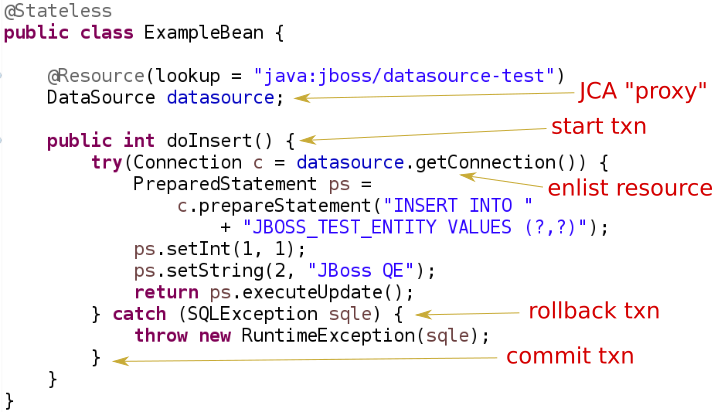
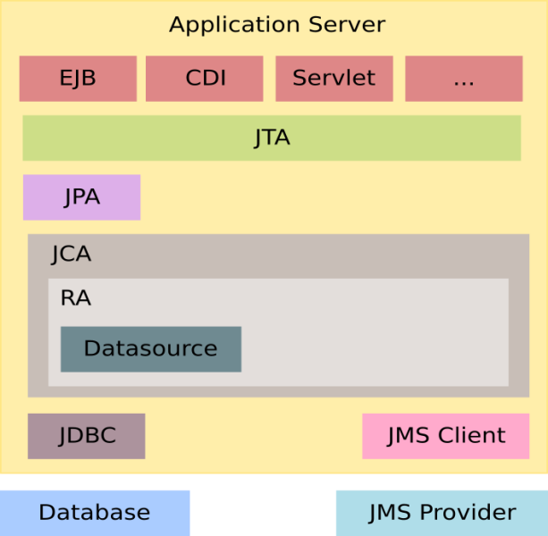

@Stateless
@TransactionManagement(TransactionManagementType.BEAN)
public void MyBean {
@Resource
SessionContext ctx;
public void method(){
try {
UserTransaction utx = ctx.getUserTransaction();
utx.begin();
...
utx.commit();
} catch(Exception e) {
utx.rollback();
}
}
}Transaction Management in Java EE
Ondra Chaloupka / ochaloup@redhat.com
There is a transaction?
Summary - Terminology
ACID (Atomic, Consistent, Isolated, Durable)
Resource local vs. Global vs. Distributed
XA is (not) Distributed transaction
Summary - DB and JMS
Databases
relaxing isolation for better concurrency
setAutoCommit(false)DDL commands are not transactional in all DBs
JMS
Connection.createSession(boolean transacted, int acknowledgeMode)
Summary - JTA
XA specification in Java
XA means more resource enlisted in one global transaction
implemented by Transaction manager
TM works with XAResource
in Java EE transaction should be hidden from developer
JTA vs. JTS
Difference of JTA to JTS has parallel in difference of JDBC to database driver.
Transactions in Java EE
How to be transactional
EJB
CMT - transactional by default
BMT - not transactional:
UserTransaction
CDI - not transactional:
@TransactionalWebServlet - not transactional:
UserTransaction
How to get transaction
@Resource/@Inject UserTransaction utx@Resource SessionContext ctx ctx.getUserTransaction()jndi:
java:comp/UserTransactionjndi:
java:jboss/TransactionManager@Resource TransactionSynchronizationRegistry reg
EJB Bean-managed transactions
Bean-managed limitations
Session beans (@Stateful, @Stateless, @Singleton)
Message driven beans (@MessageDriven)
Entity bean (EJB 2.0) can only be CMT
Stateful beans can’t use SessionSynchronization
EJB Container-managed transactions
@Stateless
@TransactionManagement(TransactionManagementType.CONTAINER)
public class MyBean {
@TransactionAttribute(TransactionAttributeType.REQUIRED)
public void method() {
// work with application managed resource
}
}Annotations under use
@TransactionManagement
CONTAINER
BEAN
@TransactionAttribute
@TransactionTimeout
@ApplicationException
Transaction attributes
REQUIRED
REQUIRES_NEW
MANDATORY
NOT_SUPPORTED
SUPPORTS
NEVER
Transaction enlistment

Component iteractions overview

Exception handling
CMT - Exceptions which cause rollback
RuntimeException
EJBException
@ApplicationException(rollback = true, inherited = true)
BMT
exceptions should be managed by developer
Message Driven Bean
@MessageDriven(name = "MyMDB",
activationConfig = {
@ActivationConfigProperty( propertyName = "destinationType",
propertyValue = "javax.jms.Queue"),
@ActivationConfigProperty( propertyName = "destination",
propertyValue ="/queue/testQueue")
}
)
public class LibraryMessageBean implements MessageListener {
@Resource
private MessageDrivenContext mdctx;
@EJB
MyBean bean;
public void onMessage(Message message) {
// do something with the received message
}
}Message Driven Bean - Bean-managed transactions
handled by JCA in-flow protocol
Bean managed transaction
message receive is not part of transaction
you can start new transaction inside of onMessage method but received message is already acknowledged
Container managed transaction
REQUIRED - new transaction at onMessage method start
NOT_SUPPORTED - no transaction - acknowledge mode
Quiz
@Stateless
public void MyBean {
@Resource
UserTransaction utx;
public void method(){
try {
utx.begin();
...
// utx.commit(); <---
} catch(Exception e) {
utx.rollback();
}
}
}Quiz
@Stateless
@TransactionManagement(TransactionManagementType.BEAN)
public void MyBean {
@Resource
UserTransaction utx;
public void method() {
try {
utx.begin();
...
// utx.commit(); <---
} catch(Exception e) {
utx.rollback();
}
}
}Quiz (contd.)
@Stateful
@TransactionManagement(TransactionManagementType.BEAN)
public void MyBean {
@Resource
UserTransaction utx;
public void method() {
try {
utx.begin();
...
// utx.commit(); <---
} catch(Exception e) {
utx.rollback();
}
}
}Quiz - Answer - for BMT!
Stateless, Singleton, MDB: EJB container ensures that transaction won’t leave a method uncommitted
EJBException ("should complete transaction before returning") + rollback done by container
Stateful: transaction can flow over several method invocations on the same SFSB instance
Quiz
@Stateless
@TransactionManagement(TransactionManagementType.BEAN)
public void MyBean {
@Resource
UserTransaction utx;
public void method() {
try {
utx.begin();
utx.setTransactionTimeout(30); // seconds
...
utx.commit();
} catch(Exception e) {
ut.rollback();
}
}
}Quiz - Answer
Nothing will happen. Transaction timeout has to be set before the transaction is started.
Quiz
@Stateless
public class MyBean {
@TransactionAttribute(TransactionAttributeType.NOT_SUPPORTED)
public void method() {
// do some work with database here
}
}Quiz
@Stateless
public class MyBean {
public void createNewUser(String name) {
UserEntity user = new UserEntity(name);
em.persist(user);
long numberOfUsersBeforeCommit = getNumberOfUsers();
}
@TransactionAttribute(TransactionAttributeType.REQUIRES_NEW)
public long getNumberOfUsers() {
String sql = "SELECT COUNT(u.id) FROM UserEntity u";
Query q = em.createQuery(sql);
return (long) q.getSingleResult();
}
}Quiz - Answer
@Stateless
public class MyBean {
@EJB
private MyBean thisBean;
public void createNewUser(String name) {
UserEntity user = new UserEntity(name);
em.persist(user);
long numberOfUsersBeforeCommit = thisBean.getNumberOfUsers();
}
@TransactionAttribute(TransactionAttributeType.REQUIRES_NEW)
public long getNumberOfUsers() {
String sql = "SELECT COUNT(u.id) FROM UserEntity u";
Query q = em.createQuery(sql);
return (long) q.getSingleResult();
}
}Quiz
@Stateless
public class MyBean {
@EJB
private CityFinder cityBean;
public void create(String name, String cityName) {
UserEntity user = new UserEntity(name);
em.persist(user);
CityEntity city = cityBean.findCity(cityName);
user.setHomeTown(city);
}
}
@Stateless
@TransactionAttribute(TransactionAttributeType.REQUIRES_NEW)
public class CityFinder {
public CityEntity findCity(String cityName) {
String q = "select c from CityEntity c where c.name=:name";
Query query = Query.createQuery(q).setParameter("name", cityName);
try{
return (CityEntity) query.getSingleResult();
} catch(NoResultException nre){
return null;
}
}
}Quiz - Answer
City is found in a new transaction. Entity manager is closed at the end of that transaction -
at the end of method findCity.
Result: Entity became detached.
Detached CityEntity reference is being set to managed UserEntity.
Quiz
@Stateless
public class MyBean {
@EJB
private MyBean thisBean;
public void createNewUser(String name) {
try {
thisBean.doSomeWork();
} catch (Exception e) {
log.warn("The work failed but we will still create user for you");
}
UserEntity entity = new UserEntity(name);
em.persist(entity);
}
public long doSomeWork() {
// do some business but unfortunatelly something goes wrong...
throw new RuntimeException();
}
}Quiz - Answer
The transaction is marked as setRollbackOnly.
As RuntimeException surpassed the bean boundaries and container will mark it for rollback.
Result: transaction will be rollbacked despite catching the exception.
Quiz
@Stateless
public class TableCreator {
@Resource
DataSource datasource;
public void create() {
try(Connection connection = datasource.getConnection()) {
Statement st = connection.createStatement();
st.execute("CREATE TABLE user (id INTEGER NOT NULL, name VARCHAR(255))");
} catch (SQLException sqle) {
// ignore this as table already exists
}
}
}
@Stateless
public class Inserter {
@PersistenceContext
private EntityManager em;
@EJB
private TableCreator creator;
public void call() {
creator.create();
UserEntity entity = new UserEntity(1, "EAP QE");
em.persist(entity);
}
}Quiz - Answer
@Stateless
public class TableCreator {
@Resource
DataSource datasource;
@TransactionAttribute(TransactionAttributeType.REQUIRES_NEW)
public void create() {
try(Connection connection = datasource.getConnection()) {
Statement st = connection.createStatement();
st.execute("CREATE TABLE user (id INTEGER NOT NULL, name VARCHAR(255))");
} catch (SQLException sqle) {
// ignore this as table already exists
}
}
}
@Stateless
public class Inserter {
@EJB
private TableCreator creator;
public void call() {
creator.create();
UserEntity entity = new UserEntity(1, "EAP QE");
em.persist(entity);
}
}Quiz - WebServlet
@WebServlet(name="transaction", urlPatterns={"/transaction"})
public class WebServletTransactionRun extends HttpServlet {
@EJB
private StatefulBean bean; // defined as @Stateful
@Override
protected void doGet(final HttpServletRequest request, final HttpServletResponse response)
throws ServletException, IOException {
bean.doWork();
}
}Quiz - WebServlet - Anser #1
@WebServlet(name="transaction", urlPatterns={"/transaction"})
public class WebServletTransactionRun extends HttpServlet {
@Override
protected void doGet(final HttpServletRequest request, final HttpServletResponse response)
throws ServletException, IOException {
StatefulBean bean = (StatefulBean) request.getSession().getAttribute("sfsb");
if(bean == null) {
try {
InitialContext ic = new InitialContext();
bean = (StatefulBean) ic.lookup("java:app/StatefulBean");
request.getSession().setAttribute("sfsb", bean);
} catch (NamingException e) {
throw new ServletException(e);
}
}
bean.doWork();
}
}Quiz - WebServlet - Answer #2
@WebServlet(name="transaction", urlPatterns={"/transaction"})
public class WebServletTransactionRun extends HttpServlet {
@Inject
StatefulBean bean;
@Override
protected void doGet(final HttpServletRequest request, final HttpServletResponse response)
throws ServletException, IOException {
bean.doWork();
}
}
@Stateful
@SessionScoped
public class StatefulBean {
....
}Quiz - WebServlet - UserTransaction
@WebServlet(name="transaction", urlPatterns={"/transaction"})
public class WebServletTransactionRun extends HttpServlet {
@Resource
UserTransaction utx;
@EJB
StatelessBean bean;
@Override
protected void doGet(final HttpServletRequest request, final HttpServletResponse response)
throws ServletException, IOException {
try {
utx.begin();
bean.doWork();
utx.commit();
} catch (Exception e) {
...
}
}
}Transaction context propagation
transaction is propagated from Bean-managed transaction to Container-managed transaction
transaction is not propagated from Container-managed transaction to Bean-managed transaction
transaction in BMT is suspended and CMT (possibly) starts new one
BMT → CMT - propagated
@Stateless
public class CmtBean {
public void work() {
// do something
}
}
@Stateless
@TransactionManagement(TransactionManagementType.BEAN)
public void BmtBean {
@Resource
UserTransaction utx;
@EJB
private CmtBean bean;
public void method() {
try {
utx.begin();
bean.work();
utx.commit();
} catch(Exception e) {
ut.rollback();
}
}
}CMT → BMT - not propagated
@Stateless
@TransactionManagement(TransactionManagementType.BEAN)
public void BmtBean {
public void do() {
// do something
}
}
@Stateless
public class CmtBean {
@EJB
private BmtBean bean;
public void work() {
bean.do();
}
}CDI transactional management
@Transactional and @TransactionScoped
@Transactional
javax.transaction.TxType value
Class[] rollbackOn
Class[] dontRollbackOn
@TransactionScoped
JBoss sources configuration
Datasource
<datasource jta="true" jndi-name="java:jboss/datasource-test" pool-name="datasource-test"
enabled="true" use-java-context="true" spy="true">
<connection-url>jdbc:postgresql://localhost:5432/crashrec</connection-url>
<driver>database-jdbc-driver.jar</driver>
<security>
<user-name>crashrec</user-name>
<password>crashrec</password>
</security>
<transaction-isolation>TRANSACTION_READ_COMMITTED</transaction-isolation>
</datasource>XA Datasource
<xa-datasource jndi-name="java:jboss/xa-datasource-test" pool-name="xa-datasource-test"
enabled="true" spy="true">
<xa-datasource-property name="PortNumber">
5432
</xa-datasource-property>
<xa-datasource-property name="ServerName">
localhost
</xa-datasource-property>
<xa-datasource-property name="DatabaseName">
crashrec
</xa-datasource-property>
<xa-datasource-class>org.postgresql.xa.PGXADataSource</xa-datasource-class>
<driver>database-jdbc-driver.jar</driver>
<security>
<user-name>crashrec</user-name>
<password>crashrec</password>
</security>
</xa-datasource>JMS configuration (HornetQ)
<jms-connection-factories>
<connection-factory name="InVmConnectionFactory">
<connectors>
<connector-ref connector-name="in-vm"/>
</connectors>
<entries>
<entry name="java:/ConnectionFactory"/>
</entries>
</connection-factory>
<connection-factory name="RemoteConnectionFactory">
<connectors>
<connector-ref connector-name="http-connector"/>
</connectors>
<entries>
<entry name="java:jboss/exported/jms/RemoteConnectionFactory"/>
</entries>
</connection-factory>
<pooled-connection-factory name="hornetq-ra">
<transaction mode="xa"/>
<connectors>
<connector-ref connector-name="in-vm"/>
</connectors>
<entries>
<entry name="java:/JmsXA"/>
<entry name="java:jboss/DefaultJMSConnectionFactory"/>
</entries>
</pooled-connection-factory>
</jms-connection-factories>
<jms-destinations>
<jms-queue name="ExpiryQueue">
<entry name="java:/jms/queue/ExpiryQueue"/>
</jms-queue>
<jms-queue name="DLQ">
<entry name="java:/jms/queue/DLQ"/>
</jms-queue>
</jms-destinations>Bonus: JPA
JPA overview in short
ORM (Object-relational mapping)
EclipseLink (reference), Hibernate (JBoss)
Benefits (theoretically)
staying in object oriented world
independent on underlaying database
simplified CRUD
JPQL (db independent + simplified join queries)
automatic table creation (hbm2dll)
performance (lazy dml, batching sql, 2nd level cache)
SQL table creation
CREATE TABLE PERSON (
id INTEGER NOT NULL DEFAULT ('person_seq'),
username VARCHAR(255),
birthdate DATE,
...
)Java entity definition
@Entity
@Table("person")
public class Person {
@Id
@GeneratedValue
private int id;
private String username;
@Temporal(TemproalType.DATE)
private Date birthDate;
@ManyToMany
@JoinTable(name = "PERSON_GROUP",
joinColumn = @JoinColumn(name = "person_id"),
inverseJoinColumn = @JoinColumn(name = "group_id"))
private List<Groups> groups;
...
}Entity Manager in Java SE
EntityManagerFactory emf = Persistence.createEntityManagerFactory("MyPersistenceUnit");
EntityManager em = emf.createEntityManager();
em.getTransaction().begin();
Person person = new Person();
person.setName("JBoss EAP 6");
em.persist(person);
em.getTransaction().commit();
em.close();
emf.close();Entity Manager in Java EE
@Stateless
public SomeBean() {
@PersistenceContext
EntityManager em;
public void newPerson() {
Person person = new Person();
person.setName("JBoss EAP 6");
em.persist(person);
}
}Persistence.xml in Java SE
<persistence-unit name="ResourceLocalPersistenceUnit" transaction-type="RESOURCE_LOCAL">
<class>org.jboss.qa.tspresentation.Person</class>
<properties>
<property name="hibernate.connection.url"
value="jdbc:postgresql://localhost:5432/crashrec?loglevel=2"/>
<property name="hibernate.dialect"
value="org.hibernate.dialect.PostgreSQL82Dialect"/>
<property name="hibernate.connection.driver_class" value="org.postgresql.Driver"/>
<property name="hibernate.connection.username" value="crashrec"/>
<property name="hibernate.connection.password" value="crashrec"/>
<property name="hibernate.hbm2ddl.auto" value="update"/>
<property name="hibernate.show_sql" value="true"/>
<property name="hibernate.format_sql" value="true"/>
</properties>
</persistence-unit>Persistence.xml in Java EE
<persistence-unit name="TestPersistenceUnit" transaction-type="JTA">
<jta-data-source>java:jboss/datasource-test</jta-data-source>
<properties>
<property name="hibernate.dialect"
value="org.hibernate.dialect.PostgreSQL82Dialect"/>
<property name="hibernate.temp.use_jdbc_metadata_defaults" value="true" />
<property name="hibernate.hbm2ddl.auto" value="update"/>
<property name="hibernate.show_sql" value="true"/>
<property name="hibernate.format_sql" value="true"/>
</properties>
</persistence-unit>em.flush() and em.clear()
EntityManager em = emf.createEntityManager();
em.getTransaction().begin();
Person person = em.find(Person.java, 1L);
person.setName("JBoss EAP 7");
// em.flush()
em.getTransaction().commit();
em.clear();Transactions in JPA
Transaction management defined by transaction-type (persistence.xml)
RESOURCE_LOCAL
JTA
Relatet to type of persistence context
Any update operation has to be proceeded inside of a transaction
Read operation could be proceeded out of the transaction
Persistence context types
Application-managed
RESOURCE_LOCAL/Java SE
ends (is cleared) on manual call of clear method or em.remove(entity)
Container-managed: Transaction-scoped
ends at the end of transaction
Container-managed: Extended
used only with SFSB
ends when SFSB method
@Removeis calledduring the time several transactions could be committed
A side note: locking
Optimistic
@Versionat attributeem.lock(person, LockModeType.OPTIMISTIC)
Pesimistic
em.lock(persion, LockModeType.PESIMISTIC_WRITE)
References
Presentation https://github.com/ochaloup/ts-presentation/blob/master/slides/slides1.adoc
Presentation #2 https://github.com/ochaloup/ts-presentation/blob/master/slides/slides1b.adoc
Java Transaction Design Strategies http://www.infoq.com/minibooks/JTDS
Transakce v Java EE (Kamil Ševeček) https://www.youtube.com/watch?v=6q9NIRBHd5I
Java Transaction Processing http://www.amazon.com/Java-Transaction-Processing-Design-Implementation/dp/013035290X
Bookmarks at http://delicious.com/chalda/ts.presentation
?!